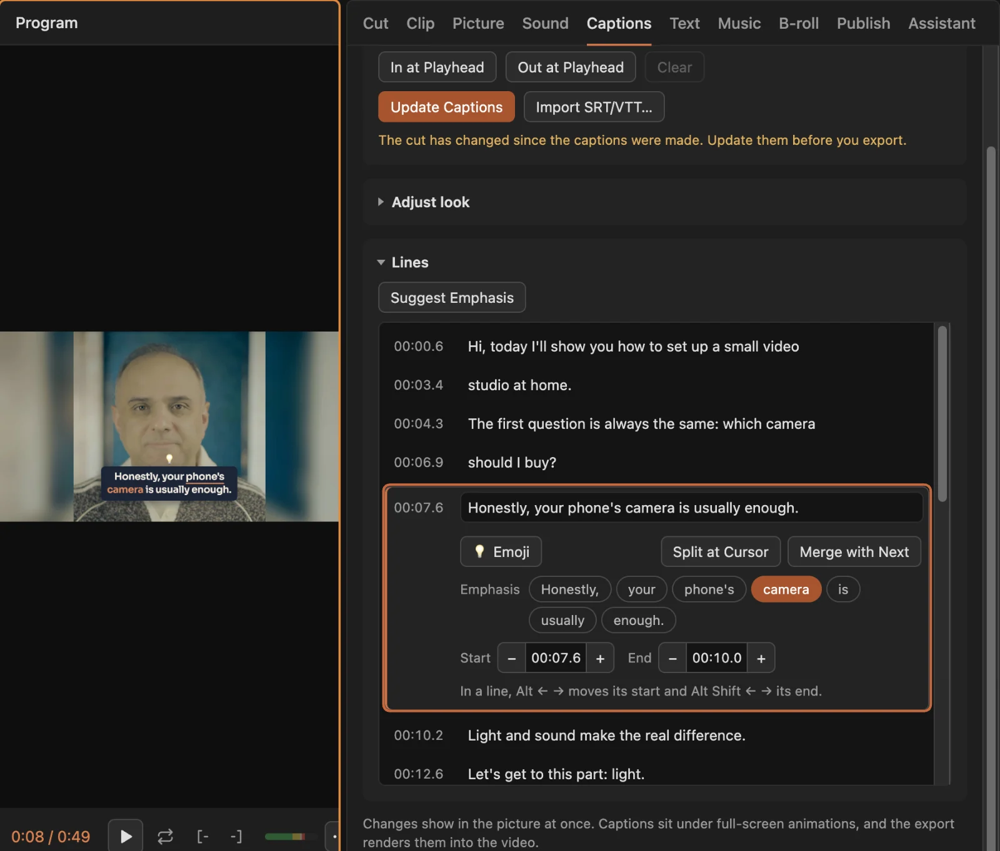

Captions
Captions are made from your own words, in a look you pick. Changes show in the picture at once, and the export renders them into the video.

Make captions
- Pick a lookUnder Look, click one of the ready looks. Its pictures show your own frame with a sample line. Font keeps The look's own, or takes one of yours (Add Font…).
- Make themPress Make Captions. With In and Out set, only that stretch gets captions; those outside it stay.
- Keep them currentIf you cut after making them, the tab says so: press Update Captions before you export. Making them again replaces your caption edits; word corrections in the transcript are kept.
To move the captions, drag them in the picture.
Adjust the look
Adjust look holds Colours (Text, Highlight, Box; Look's Own Colours puts them back), Size and Words per line.
Lines
Under Lines, click a line: its tools open under it.
- Change its words in place.
- Split at Cursor and Merge with Next.
- Start −0.1 s, Start +0.1 s, End −0.1 s, End +0.1 s; in a line, Alt ← → moves its start and Alt ⇧ ← → its end.
- Click a word to emphasise it. Emphasis style: Highlight Colour, Larger or Both.
- Add Emoji: shown above the line.
Suggest Emphasis asks your AI model which words stand out; Emphasise Suggested takes them.

Import subtitles
Import SRT/VTT… brings in a subtitle file you already have. It keeps the file's own times, whatever In and Out say, and replaces your caption edits.
Captions sit under full-screen animations. For a subtitle file instead of burnt-in captions, export Subtitle file (Export); for other languages, see Translation and dubbing.